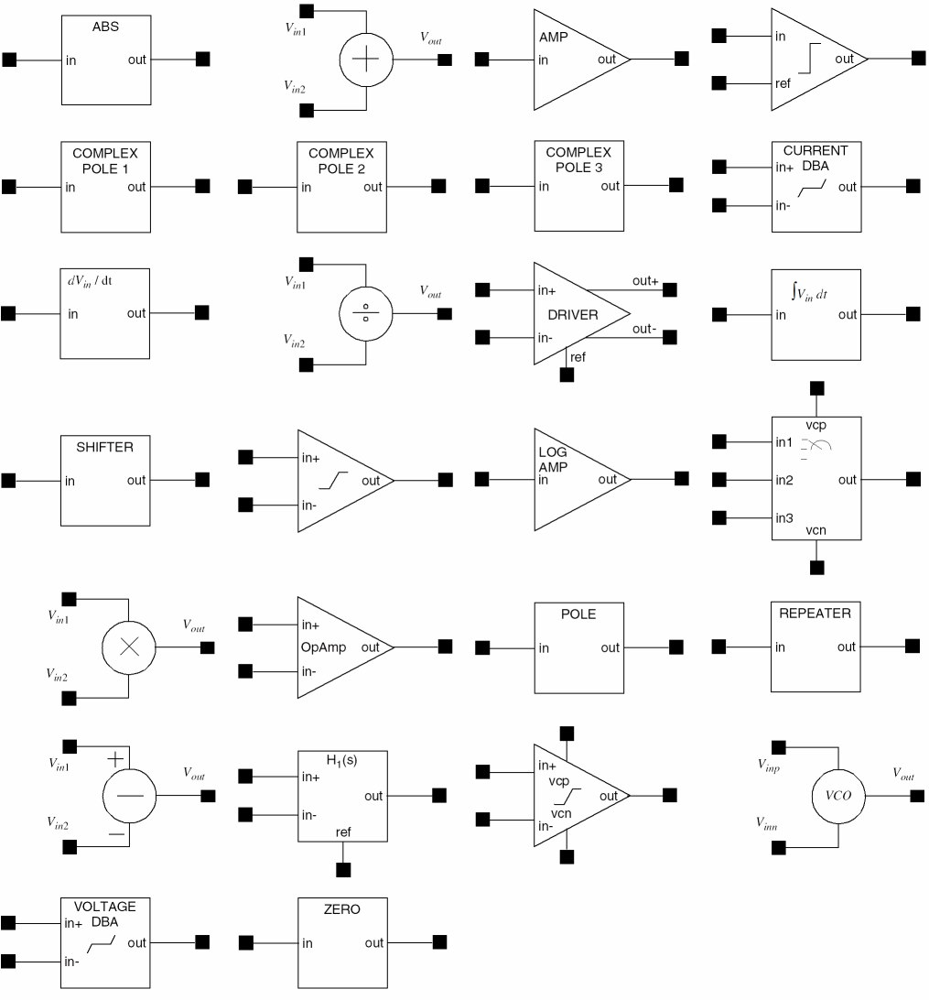

Functional Block Library Components and Symbols
The functional block library contains several components. These components are divided into four categories- Amplifiers, Math, Misc, and Pole.
For each component, multiple views, such as symbol view and simulator specific views are available. For some components, the schematic view is also available.
The following list shows the library names of these components. These components are described in detail in Introduction to Functional Library.
- Absolute Value Symbol
- Adder Symbol
- Amplifier Symbol
- Comparator Symbol
- Complex Pole 1 Symbol
- Complex Pole 2 Symbol
- Complex Pole 3 Symbol
- Current Dead-Band Amplifier (currentDba) Symbol
- Differentiator Symbol
- Divider Symbol
- Driver Symbol
- Integrator Symbol
- Level Shifter Symbol
- Limiting Amplifier Symbol
- Logarithmic Amplifier Symbol
- Multiplexer Symbol
- Multiplier Symbol
- Operational Amplifier (opAmp) Symbol
- Pole Symbol
- Repeat Waveform Symbol
- Subtractor Symbol
- Transfer Function 1 Symbol
- Voltage-Controlled Variable-Gain Amplifier
- Voltage-Controlled Oscillator (VCO) Symbol
- Voltage Dead-Band Amplifier (VoltageDba) Symbol
- Zero Symbol
The following figure shows all the components symbols of the Functional Block Library.

Related Topics
Return to top